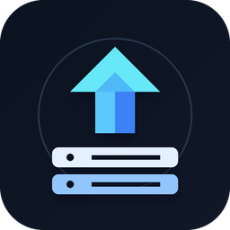

Account details
Manage the name and email associated with your account.
Change password
Use your current password to set a new one.
Minimum 6 characters

Manage servers, run deployment scripts, browse FTP files, and keep command groups organized from one focused desktop workspace.
Live fleet telemetry, uptime incidents, backup protection, and data services.
Incidents that need attention right now.
Current jobs, runs, and latest outcome.
Connection health across saved profiles.
Live connection coverage and node availability.
Connection state across the active fleet.
Recent events and fleet organization.
CPU, memory, storage, network, and process health for the selected server.
Choose an SSH-capable server from the sidebar to open a live telemetry session.
This RDP-only server does not expose a monitoring transport yet. Add SSH credentials or use the server workspace.
Last five minutes of live samples
Aggregate traffic across physical interfaces
Mounted filesystems and available capacity
| Mount | Filesystem | Used | Available | Usage |
|---|---|---|---|---|
| Waiting for storage data | ||||
Highest CPU consumers, refreshed every five seconds
| Process | PID | CPU | Memory |
|---|---|---|---|
| Waiting for process data | |||
Identity and connection information reported by the host
Endpoint health, incidents, coverage, and response performance
Current state across all workspace monitors
Latest operational changes
Track endpoint availability and response performance
| Monitor | Status | Target | Last Check | Latency | Actions |
|---|
Acknowledge active events and review recovery history
| Monitor | State | Summary | Opened | Resolved | Actions |
|---|
Availability and monitoring coverage use separate denominators
Select a reporting period
Availability, coverage, incidents, and latency
Checks continue, while incident transitions and notifications are suppressed
Infrastructure protection and recovery
Current RPO posture and observed restore evidence.
Latest backup, verification, and recovery runs.
Scheduled and on-demand workload protection.
Computers and servers available for backup jobs.
Backup storage, capacity, and health.
Browse protected files and their versions.
Backup, verification, maintenance, and restore runs.
Backup jobs assign destinations managed at the application level.
Destinations can be shared by Backup Manager and Uptime Monitor.
Restore verification and measured recovery readiness.
Connections and database workspaces
Manage your account details and sign-in information.
Manage the name and email associated with your account.
Use your current password to set a new one.
Select or create a workspace to sync encrypted servers, templates, and SSH secrets.
Organize servers into reusable groups across the workspace.
Protect account data, restore saved configurations, and manage application updates.
Backups include saved servers, templates, workspace settings, and encrypted connection details.
Installed version 0.1.0
Automatic GitHub release tracking is standing by.
Shared desktop, email, webhook, Slack, and Microsoft Teams routes
Delivery evidence across Backup Manager and Uptime Monitor
Controls the local Windows worker used by all workspace monitors.
Build and manage reusable command sets for your servers.
Choose a template from the list to view and edit its commands.
Give AI agents authenticated SSH command and SFTP file access to servers already saved in DeployerX. Hostnames, usernames, passwords, and private keys stay inside this app.
The desktop app must remain open while an agent uses this MCP endpoint.
Authorization: Bearer <token> with every request.Put the token in DEPLOYERX_MCP_TOKEN, then add this to your Codex config.toml.
[mcp_servers.deployerx] url = "http://127.0.0.1:43821/mcp" bearer_token_env_var = "DEPLOYERX_MCP_TOKEN" default_tools_approval_mode = "prompt" tool_timeout_sec = 300
Clients that accept JSON server definitions can use an HTTP entry with an authorization header.
{
"mcpServers": {
"deployerx": {
"type": "http",
"url": "http://127.0.0.1:43821/mcp",
"headers": { "Authorization": "Bearer <token>" }
}
}
}
127.0.0.1 is reachable only from this computer. Codex app, CLI, and IDE can share the local configuration above. Codex cloud and ChatGPT web do not read this machine's localhost configuration; hosted ChatGPT Work receives remote MCP tools through plugins. A different remote agent can connect only if it supports Streamable HTTP and has a trusted HTTPS tunnel or private route to this endpoint. A tunnel makes the URL reachable, but does not install it into a hosted chat. Never expose the port directly to the public internet.
deployerx_list_serversReturns saved server names and opaque IDs, never connection details.deployerx_ssh_executeRuns a non-interactive SSH command with timeout and bounded output.deployerx_sftp_listLists a remote directory.deployerx_sftp_readReads UTF-8 or base64 files up to 2 MiB.deployerx_sftp_writeCreates or replaces UTF-8 or base64 files up to 2 MiB.deployerx_sftp_mkdirCreates remote directories.deployerx_sftp_moveRenames or moves remote items.deployerx_sftp_deleteDeletes files or explicitly recursive directories.DeployerX serves stateless MCP over Streamable HTTP and requires bearer authentication before parsing a request. It listens only on 127.0.0.1, limits request and tool payload sizes, redacts connection targets from transport errors, and resolves credentials internally from the selected server ID. SFTP is the SSH File Transfer Protocol; insecure plain FTP is intentionally not exposed.
Choose how DeployerX looks. Your selection is saved on this device.
A focused Windows workspace for SSH deployments, server operations, uptime monitoring, backup and recovery, and database management.
EverythingX is a modern IT company that develops software, web and mobile applications, SaaS platforms, and business automation tools for growing organizations.
Choose local-only storage or sign in to sync with a cloud team.
Choose a workspace to continue, or create a new workspace.
Create a workspace to keep servers, templates, and team members in cloud sync.
Selected result cell
Backup activity
Backup source
Backup source files
This action needs confirmation.